Groom em Geometry Nodes
Do primeiro fio ao render, em linguagem de artista. Cada passo diz o que fazer, o que cada botão significa e o que dá errado. Tudo vem de fontes verificadas: manual, código dos node groups e quem entregou groom realista em produção.
Como o sistema pensa
Tudo que você vai fazer cabe em três camadas. Se um problema aparece, ele está em uma delas, e saber em qual economiza horas.
- Não dá para esculpir um filho. Se um fio interpolado está errado, o conserto é numa guia perto dele ou num node da stack.
- Poucas guias, muitos filhos. Quem tenta esculpir milhares de curvas trava o viewport e conclui que o sistema é ruim. Era só isso que faltava entender.
- Um groom são vários objetos. Scalp, franja, sobrancelha, cílio, barba. Em fur: corpo, orelha, bigode. Cada objeto tem sua stack e sua densidade. Para copiar a stack de um para outro: Ctrl+L, Copy Modifiers, e depois reatribua a superfície no Interpolate.
grooming/CEREBRO_GROOMING.md seção 1; blender-dev/studio-blender-2023-procedural-hair-nodes.md; comunidade/blenderartists-1460445-...md.Antes de começar
Três coisas resolvidas antes da primeira guia evitam refazer o groom inteiro depois.
Checklist
- Hair cap. Uma malha de crescimento separada da cabeça, com a topologia que o cabelo pede, não a que o rosto pede. É ela que entra como Surface em todos os modificadores.
- UV sem sobreposição. As curvas vivem no espaço UV. UV empilhada dá o erro "Invalid surface UVs". UDIM pode. Se a costura central do espelho ficou "quase colada", Merge by Distance no editor de UV.
- Topologia e UV fechadas. Mudar depois obriga a reposicionar as guias. Textura e rig não atrapalham o groom e podem vir depois.
- Risca marcada. Um vertex group na linha da risca e uma hard edge dividindo a cap em duas metades. É isso que faz a interpolação respeitar a risca.
- Referência por subespécie e estação. Misturar fotos de indivíduos, regiões ou estações diferentes dá um híbrido que não convence. Desenhe por cima da referência onde o pelo muda de tipo e a direção, para não decidir isso já em 3D.
palestras/bcon2023-daniel-bystedt-...md; palestras/bcon2025-kerstin-schmidbauer-...md.A stack que funciona
Esta é a ordem dos modificadores num groom realista. Gerar primeiro, estruturar, detalhar, e Deform Curves on Surface sempre por último. Cada passo abaixo explica um item.
- 1Interpolate Hair Curvesgera os filhos a partir das guias
- 2Create Guide Index Mapescolhe guias de clump grandes
- 3Clump Hair Curvesmechas grandes
- 4Create Guide Index Mapguias de clump pequenas
- 5Clump Hair Curvessub-mechas
- 6Hair Curves Noiseondulação que vizinhos compartilham
- 7Frizz Hair Curvescrespo fio a fio, flyaways
- 8Curl / Roll / Braidsó se o cabelo pede
- 9Trim Hair Curvescomprimento com variação
- 10Set Hair Curve Profileraio da raiz à ponta
- 11Shrinkwrap Hair Curvestira o que entrou na pele
- 12Deform Curves on Surfacesegue a animação do scalp
blogs-jp-zh/ja-tenp-kukan-2025-09-hair-curves-nodes-geometria.md; comunidade/devtalk-24686-...md (a cadeia em camadas pedida aos devs em 2022); palestras/bcon2026-steve-chow-...md.Esculpir as guias
Aqui você define a forma. Tudo depois é multiplicação do que você fez aqui.
Como fazer
- Selecione a hair cap. Shift+A, Curve, Empty Hair. Isso já prende o objeto ao scalp e ao UV map dele.
- Entre em Sculpt Mode. Nada aparece ainda; é normal.
- Pincel Add ou Density para plantar guias. Ligue X Symmetry. Em áreas finas (orelha, pálpebra), ligue Front Faces Only para não plantar do lado errado.
- Comece com 2 pontos por guia. Defina a direção do cabelo inteiro assim. Guia de 8 pontos no começo se emaranha e atravessa a malha.
- Pincel Comb em modo Projected, não esférico. Assim você penteia a parte de trás sem a esfera bloquear.
- Suba os pontos por guia só depois: 3 costuma bastar, 8 só para cabelo comprido. Para forma bem detalhada, aplique um Resample Curve com 15 pontos.
- Pincel Grow/Shrink com Scale Uniform desligado: o fio continua na direção existente em vez de escalar da raiz.
- Pincel Puff com Strength baixo (0,25) para levantar da pele. Guia presa dentro da malha: Puff; se não sair, apague e recrie.
Regras que evitam retrabalho
- Densidade de guias uniforme, sem buraco. Buraco vira careca, e deformação de rig amplia o buraco. Excesso vira blob e render lento.
- Guia nova com nada selecionado nasce sozinha selecionada. Penteie a direção dela antes que as vizinhas comecem a influenciar.
- Paint Selection em modo Curve seleciona o fio inteiro. Bom para encher comprimento numa área e ajustar depois.
- Use Sculpt Collision evita a guia entrar no scalp. Se os pincéis travarem com ela ligada (acontece em malha densa), desligue e resolva a penetração no fim com Shrinkwrap.
- Mudou a topologia depois? Snap to Nearest Surface, no menu do Sculpt, resolve quase tudo.
| Valor de partida | Fur de gato | De onde vem |
|---|---|---|
| Density, modo Auto | Distance Min 0,02 m · Length 0,1 m · 6 pontos | blog 点P空間 |
| Grow/Shrink, mínimo | 0,07 m rosto · 0,05 m e 0,03 m perto de olho e nariz | blog 点P空間 |
| Colisão no Comb | 0,002 m | blog 点P空間 |
| Puff | Strength 0,25 | blog 点P空間 |
palestras/bcon2023-daniel-bystedt-...md; palestras/bcon2025-kerstin-schmidbauer-...md; blogs-jp-zh/ja-tenp-kukan-2025-10-hair-curves-fur.md; manual/sculpt_paint/curves_sculpting/brushes/.Interpolate Hair Curves
Transforma dezenas de guias em milhares de filhos. É o node mais importante da stack, e o que mais gente configura errado.

O que cada campo significa
| Campo | Em português claro |
|---|---|
| Surface | A hair cap. Sem ela, nada nasce. |
| Surface Rest Position | Ligue. Os filhos nascem na malha em repouso, e o Deform Curves on Surface no fim da stack faz o cabelo acompanhar a animação. |
| Follow Surface Normal | Alinha o filho à normal da pele. Bom para fur curto; ruim para cabelo comprido que cai. |
| Part by Mesh Islands | Filho só interpola de guia da mesma ilha da malha. É o único "region map" exposto. A hard edge da risca funciona por isso. |
| Interpolation Guides | Quantas guias cada filho mistura. 1 copia a guia mais próxima (mechas duras). 4 a 6 suaviza. |
| Distance to Guides | Filhos só nascem a essa distância de uma guia. Serve para tufo, barba rala, ou "só onde eu plantei". |
| Distribution | Poisson Disk espalha parelho. Random dá aglomerados. Realismo costuma preferir Poisson. |
| Density | Fios por metro quadrado. Fur precisa de dezenas de milhares; scalp humano, milhares. |
| Density Mask | Float de 0 a 1 vindo de um atributo pintado. Onde tem cabelo e onde não tem. |
| Mask Texture | Imagem. A cor vira um único número; máscara é preto e branco. Um mapa RGB dá três máscaras se você separar canais no editor. |
| Viewport Amount | Fração da densidade só no viewport. 0,1 a 0,3 enquanto trabalha, 1,0 para render. |
| Seed | Muda o sorteio. Mude cedo, não no fim. |
essentials-internals/interpolate-hair-curves.md; comunidade/blenderartists-1621672-...md; comunidade/devtalk-27601-...md posts 5 e 7.Clump em níveis
É o que separa "cabelo de CG" de cabelo. Um clump grande e um clump pequeno, cada um com suas guias.
Como fazer
- Adicione Create Guide Index Map com Guide Distance grande (mechas grandes). Ele escolhe guias e grava o atributo
guide_curve_index. - Adicione Clump Hair Curves com Existing Guide Map ligado. Factor alto, Shape positivo, um pouco de Tip Spread, Preserve Length ligado.
- Repita os dois com Guide Distance menor. Factor mais baixo. São as sub-mechas.
- Quer controlar a quantidade de mechas sem plantar guia? Desligue Existing Guide Map no Clump e mexa só em Guide Distance. Foi assim que um British Shorthair fotorrealista ganhou muitos clumps, cada um suave.
| Campo | O que faz |
|---|---|
| Factor | 1,0 é convergência total. Nível 1 alto, nível 2 mais baixo. |
| Shape | 0 constante, 0,5 linear raiz-ponta. Cabelo real converge mais na ponta, então positivo. |
| Tip Spread | Impede que as pontas se juntem num ponto só. Sempre um pouco. |
| Clump Offset | Desloca cada mecha numa direção aleatória. Quebra o padrão radial. |
| Distance Falloff / Threshold | Limitam a influência de cada guia por distância. Sem eles, guia longe puxa curva longe. |
| Guide Mask | Float 0 a 1: quem pode virar guia. Pinte para excluir regiões. |
| Guide Index | Só para uso em nodes. O valor -987654 significa "não fornecido". Mexer nele no painel apaga o clump. |
Ver as mechas em cores
- Depois do Clump, no editor de nodes: Named Attribute tipo Integer, nome
guide_curve_index. - Random Value tipo Vector, Min 0, Max 1, com o índice no ID.
- Viewer recebendo a geometria e o vetor, tipo do item em Color. Overlays, Viewer Node ligado.
Para deixar permanente: Store Named Attribute tipo Color no domínio Curve, nome clump_color, e um node Attribute no material. Bystedt colore cada camada de clump com uma cor para ver como se misturam.
essentials-internals/create-guide-index-map.md; essentials-internals/clump-hair-curves.md; manual/modeling/geometry_nodes/hair/guides/clump_hair_curves.rst; palestras/bcon2026-steve-chow-...md; palestras/bcon2023-daniel-bystedt-...md.Noise e Frizz
Parecem iguais no painel e não são. Um é ondulação, o outro é crespo.
| Campo | Noise | Frizz |
|---|---|---|
| Distance | Quanto o fio se afasta da forma original. Comece em 0,01 m e olhe no viewport. | |
| Shape | 0 constante, 0,5 linear da raiz para a ponta, 1 só na ponta, negativo mais na raiz. | |
| Cumulative Offset | Ligado, cada ponto herda o deslocamento dos anteriores e a curva vai se afastando. Desligado é tremor local. | |
| Scale | Tamanho da onda no espaço. | não existe |
| Scale along Curve | Tamanho da onda ao longo do fio. Reduza para não estourar o comprimento. | não existe |
| Offset per Curve | Ligue para quebrar a coerência entre fios quando ela ficar óbvia. | não existe |
| Preserve Length | Ligue nos dois. Senão a deformação estica o fio. | |
Flyaways sem node dedicado
Duplique o Frizz ou o Trim e ligue um Random Value booleano na Selection, com Probability entre 0,1 e 0,5. Uma fração dos fios recebe Frizz forte e comprimento maior. No tutorial de fur: Length Factor 1,5 a 1,8 e Random Offset 0,3 m. Alternativa: um objeto Curves separado só de flyaways, com Duplicate Hair Curves e densidade baixa.
Fios soltos de propósito também são o que pega a luz numa contraluz. Foi assim que o groom do Seth Rogen leu como real diante de uma janela estourada.
essentials-internals/hair-curves-noise.md; essentials-internals/frizz-hair-curves.md; blogs-jp-zh/ja-tenp-kukan-2025-10-hair-curves-fur.md; palestras/bcon2026-steve-chow-...md; palestras/bcon2026-christopher-strommer-...md.Curl, Roll e Braid
Entram só quando o cabelo pede. São pesados e cada um tem um jeito de usar.
| Node | Para quê | Ponto de partida |
|---|---|---|
| Curl Hair Curves | Cacho por mecha. Usa guide map, então respeita o Existing Guide Map igual ao Clump. | O Curl dá 3 × Frequency voltas por metro. Cabeça real: cacho Merida Radius 0,01 e Frequency 9 a 10; onda Radius 0,015 e Frequency 3. Subdivision 2. |
| Roll Hair Curves | Enrola a ponta. Cabelo real não termina reto; um Roll leve na ponta é um dos truques de Bystedt. | Factor baixo, Roll Length curto, Random Orientation ligado |
| Braid Hair Curves | Trança de três fios com elástico opcional. | Guide Distance 1,6 m, Subdivision 3, Braid Start 0,6, Radius 0,45 m |
Afro é a pilha mais cara que existe neste sistema: Clump, Noise, Curl e Roll juntos. Viewport Amount baixo enquanto trabalha.
blogs-jp-zh/ja-tenp-kukan-2025-09-hair-curves-nodes-geometria.md; palestras/bcon2023-daniel-bystedt-...md; palestras/bcon2026-steve-chow-...md.Comprimento e raio
Dois palestrantes diferentes disseram a mesma coisa: variação de comprimento é o que separa real de uniforme.
Trim Hair Curves
- Replace Length define comprimento absoluto. Length Factor multiplica o original. Escolha um.
- Random Offset é a variação sem a qual toda ponta fica na mesma linha. Sempre algum valor.
- Mask aceita atributo pintado: vira mapa de comprimento. Por textura fica mais fino que por vertex group.
- Pin at Parameter segura a curva num ponto do comprimento.
- Scale Uniform desligado corta; ligado encolhe a curva inteira.
Set Hair Curve Profile
- Radius é o raio base. Shape e Factor Min/Max desenham o afinamento raiz-ponta. Shape 1 afeta só a ponta, perto de 0 a curva inteira, negativo mais a raiz.
- Ajuste pelo render, não pelo viewport. Quanto mais fino, mais curvas você precisa e mais caro o render.
- Perfil com raio diferente por ponto só aparece no Cycles. EEVEE e Workbench não desenham isso.
| Raio usado nas fontes | Valor | Contexto |
|---|---|---|
| Corpo de gato | 0,003 m | fur curto |
| Dentro da orelha | 0,001 m | fur muito fino |
| Bigode | 0,01 m, Shape 0,8 | fio grosso afinando |
| Sobrancelha para textura | 0,01 m | bake em câmera ortográfica |
| Cabelo humano em escala real | comece em 0,0003 m | julgamento; ajuste no render |
essentials-internals/trim-hair-curves.md; essentials-internals/set-hair-curve-profile.md; blogs-jp-zh/ja-tenp-kukan-2025-10-hair-curves-fur.md; comunidade/devtalk-27601-...md post 1; palestras/bcon2025-kerstin-schmidbauer-...md.Pele e animação
Dois nodes no fim da stack. Um tira o que entrou na pele; o outro faz o cabelo seguir o personagem.
Shrinkwrap Hair Curves
Depois de qualquer deformação que possa empurrar ponto para dentro. Above Surface em 0 e Offset Distance com uma folga empurram os pontos internos para fora. Lock Roots ligado. Serve também para fur molhado colado na pele.
Deform Curves on Surface
Sempre o último. Exige Surface Rest Position ligado no Interpolate. Com um Surface Normal Displacement dirigido por distância até a risca (Geometry Proximity, Map Range, Float Curve), ele também dá o volume que sobe na risca sem mexer nas raízes exatas.

essentials-internals/shrinkwrap-hair-curves.md; comunidade/devtalk-27601-...md post 9; palestras/bcon2023-daniel-bystedt-...md.Máscaras e atributos
A regra do sistema: pinte no scalp, leia com Named Attribute, ligue no campo. Tudo que é float no painel aceita.
Vertex group ou textura?
| Vertex group | Textura | |
|---|---|---|
| Resolução | Limitada pela densidade da malha | Tão fina quanto o pixel |
| Portabilidade | Dado do próprio modelo; não quebra ao mover arquivo | Caminho externo pode quebrar |
| Uso típico | Regiões, densidade, clump | Fendas do pelo, detalhe fino |
Muitos vertex groups por região e por efeito é normal num groom completo. Desligue o Interpolate enquanto pinta pesos.
Densidade por textura, do jeito de Bystedt
- Mapa pintado: branco denso, cinza 50% base, preto sem cabelo.
- No editor: Image Texture lendo o UV por Named Attribute, depois um Color Ramp cortando logo acima de 0,5.
- Saída no Density Mask do Interpolate. Exponha um multiplicador global de densidade no modificador para baixar tudo quando a cena pesar.
Grupos de guias
Atributos booleanos por curva marcam grupos. Named Attribute, Separate Geometry, e cada grupo ganha sua faixa da stack. Quando as faixas se repetem, é hora de um node group com parâmetros, ou de um inteiro region num For Each Element.
palestras/bcon2026-steve-chow-...md; palestras/bcon2025-kerstin-schmidbauer-...md; palestras/bcon2023-daniel-bystedt-...md; essentials-internals/interpolate-hair-curves.md.Shading no Cycles
Principled Hair BSDF. Só Cycles tem shader de cabelo; EEVEE serve para preview.


| Ponto de partida | Valores | De onde vem |
|---|---|---|
| Cabelo preto | Melanin 0,859 · Redness 0,145 · Roughness 0,223 · Radial 0,355 | blog 点P空間 |
| Fur de gato | Roughness 0,7 · Radial 0,3 a 0,5 · Random Roughness 0,1 a 0,2 | blog 点P空間 |
| Bigode branco | Roughness 0,5 | blog 点P空間 |
Decisões que importam
- Modelo Chiang ou Huang. Chiang é o padrão. Huang, desde a 4.0, aceita seção elíptica via Aspect Ratio (0,5 a 1,0 conforme o tipo de cabelo) e desde a 4.2 troca near e far field pela distância da câmera. Pode ficar lento em roughness baixo e "achatado" em close.
- Gradiente raiz-ponta e cor por fio. Curve Info no shader: Intercept para raiz-ponta, Random para variar por fio.
- Pelo denso escurece por dentro e parece sujeira. Transparent BSDF misturado por Light Path para a sombra ficar um pouco transparente.
- Viewport não atualizou depois de mexer no shader? Alterne Solid e Rendered.
- Preview no EEVEE: Curve Shape em Strip e Additional Subdivision 3.
manual/render/shader_nodes/shader/hair_principled.rst; blogs-jp-zh/ja-tenp-kukan-2025-09-principled-hair-bsdf-material.md; blender-dev/devdocs-4.0-cycles-principled-hair-huang.md; blender-dev/devdocs-4.2-cycles-huang-hair.md; palestras/bcon2026-steve-chow-...md.Física na 5.2
Existe, é nativa, e é experimental por rótulo oficial. Saiba o que quebra antes de usar em produção.

Setup
- O operador Empty Hair da 5.2 já adiciona o modificador Capture Rest Geometry à superfície. Sem ele a física não sabe o que é repouso.
- Adicione Hair Dynamics. Modo Physics.
- Comece com Substeps e Constraint Iterations baixos e suba só se instabilizar.
- Colliders: qualquer mesh fechada com o modificador Collider.
| Parâmetro | Significa |
|---|---|
| Stretchiness | 0 não estica. 1 deixa o fio crescer até dez vezes sob a própria gravidade. |
| Bendiness / Root Bendiness | Quanto dobra ao longo do fio e na raiz. |
| Structure Randomness | Variação aleatória de stretch e bend por ponto. |
| Mass, Friction, Damping | Massa como fator de influência, não valor real; atrito com superfície; amortecimento linear e angular. |


Plano B, que funcionava antes e ainda funciona: proxy mesh gerado das curvas, Cloth no proxy com vertex groups, Surface Deform devolvendo o movimento às curvas.
manual/modeling/geometry_nodes/simulation/hair_dynamics.rst; blender-dev/devdocs-5.2-physics.md; blender-dev/code-blender-2026-07-geometry-nodes-physics.md; comunidade/devtalk-45449-...md; comunidade/blenderartists-1407111-...md.Onde o Geometry Nodes vira groom de verdade
Tudo até aqui dá para fazer no painel do modificador. Mas o painel só aceita um número por campo. O cabelo real não tem um número: cada fio tem o seu. A ideia deste bloco cabe numa frase: qualquer campo float dos hair nodes aceita um valor que muda por fio, por ponto ou por lugar no scalp. O nome disso no Blender é field. Ligue um field no campo e o número vira variação.
1. Do painel para os nodes
Como fazer
- No cabeçalho do modificador, menu da seta, Move to Nodes. O Blender embrulha o node group num novo tree só seu, com o mesmo resultado, sem quebrar nada.
- Abra o Geometry Node Editor. O hair node aparece como um node; os campos do painel viram sockets. Agora cada socket aceita um fio ligado.
- O que você quer continuar mexendo no painel, ligue no Group Input: arraste do socket do node até o socket vazio do Group Input. Vira controle exposto.
- Vários modificadores? Faça Move to Nodes no primeiro e arraste os outros hair nodes do Asset Browser direto para dentro desse tree, em sequência. Um tree, uma stack.
Simon Thommes, autor dos node groups, foi direto sobre isso: o painel é a interface simplificada, e "o node tree é a interface principal desses nodes". Máscara por textura no clump, por exemplo, sempre foi pensada para o editor.
manual/modeling/modifiers/introduction.rst (Move to Nodes); comunidade/devtalk-27601-...md posts 3 e 5.2. Randomizar qualquer parâmetro por fio
A Essentials traz um node de leitura chamado Curve Info. Ele sai com Random, um número de 0 a 1 diferente para cada curva, além de Curve Index, Length, Direction e Surface UV. É o gerador de variação mais simples que existe.
Receita padrão
- Curve Info, saída Random.
- Map Range: From 0 a 1, To Min e To Max com a faixa que você quer. Comprimento variando 30%: 0,7 a 1,3.
- Ligue no campo: Length Factor do Trim, Factor do Clump, Distance do Noise, Radius do Profile (aí multiplique pelo raio base com um Math).
- Quer outra distribuição sem mexer no que já está bom? Random Value tipo Float, com ID vindo do Curve Index e um Seed próprio. Cada Random Value com seed diferente dá uma variação independente.
Só uma fração dos fios
- Random Value tipo Boolean, Probability 0,1 a 0,5.
- Ligue na entrada Selection do node que você quer limitar. Se o node do painel não mostra Selection, é porque ela existe só na versão em nodes: é mais um motivo para o Move to Nodes.
- É a receita do "Trim Hair Random" do tutorial de fur: Length Factor 1,5 a 1,8, Random Offset 0,3 m, Probability 0,1 a 0,5. Alguns fios mais compridos e soltos, o resto intacto.
essentials-internals/curve-info.md; blogs-jp-zh/ja-tenp-kukan-2025-10-hair-curves-fur.md; teste em bpy 5.0.1 nesta base.3. Variar ao longo do fio
O campo Shape que aparece em quase todo hair node é uma versão simplificada disto: 0 constante, 0,5 linear, 1 só na ponta, negativo mais na raiz. Quando você quer desenhar a curva de influência, use o node.
Como fazer
- Spline Parameter, saída Factor: 0 na raiz, 1 na ponta, por ponto.
- Float Curve: desenhe a forma. Sobe devagar e cai no fim, por exemplo, para o Noise pegar o meio do fio e poupar raiz e ponta.
- Ligue no Factor de Noise, Frizz ou Profile. Para o clump só na ponta, ligue no Factor do Clump.
Os nodes de leitura Curve Root e Curve Tip dão a seleção, a posição e a direção da raiz e da ponta. Curve Segment dá o comprimento de cada segmento. Sara Matsumoto usou Spline Parameter numa RGB Curve para desenhar o afunilamento das mechas em mesh, o mesmo princípio.
essentials-internals/curve-root.md, curve-tip.md, curve-segment.md; comunidade/devtalk-27601-...md post 3; palestras/bcon2024-sara-matsumoto-...md.4. Variar pelo espaço, sem pintar
Cabelo real tem manchas: uma área mais presa em mecha, outra mais solta, sem fronteira nítida. Isso é uma textura procedural lida na raiz.
Como fazer
- Curve Root, saída Root Position. Ler na raiz garante que o fio inteiro recebe o mesmo valor.
- Noise Texture com o Vector vindo da Root Position. Scale define o tamanho da mancha no scalp.
- Map Range para a faixa útil, e no campo. Clump Factor entre 0,4 e 1,0 dá mechas fortes em ilhas, fracas entre elas.
- Para regiões com fronteira, Voronoi Texture no lugar do Noise. Para um gradiente da testa à nuca, Separate XYZ da Root Position, eixo certo, Map Range.
É o que Bystedt fez para o Noise "com Offset Per Curve" e para as duas camadas de clump com seeds diferentes: a variação vem de textura e de semente, não de mão.
essentials-internals/curve-root.md; palestras/bcon2023-daniel-bystedt-...md.5. Máscaras pintadas: os três caminhos
Pintar é o que você já sabe fazer. A pergunta é onde a tinta vai parar e como ela chega no node. Há três caminhos, e o pincel de cada um tem o mesmo controle de suave e duro.
Suave ou duro, em qualquer modo de pintura
O que define a borda do pincel é a curva de Falloff, na aba do pincel. As predefinições vão da mais suave à mais dura: Smoother, Smooth, Sphere, Root, Linear, Sharp, Sharper, Inverse Square, Constant. Custom deixa você desenhar a curva: o lado esquerdo é o centro do pincel, o direito é a borda.
- Falloff Shape: Sphere respeita distância no mundo; Projected usa distância na tela e atravessa dobras. Texture Paint é sempre Projected.
- Strength multiplica tudo. Suave com Strength baixo e várias passadas é mais controlável que forte de uma vez.
- Front Faces Only evita pintar o outro lado em geometria fina.
- Hardness como controle separado só existe no Sculpt Mode de malha; nos outros modos, é a curva de Falloff.
A mesma página do manual vale para Weight Paint, Texture Paint e o Selection Paint das curvas.
Caminho A · Weight Paint no scalp, o mais usado
- Selecione o scalp, Weight Paint. Crie um vertex group com nome claro:
densidade,clump_mask,comprimento. Um por efeito e por região é normal. - Pinte. Vermelho é 1, azul é 0. Falloff Smooth para transição suave, Sharp ou Constant para borda dura.
- Desligue o Interpolate enquanto pinta; senão cada pincelada recalcula o cabelo inteiro.
- No tree do cabelo, depois do Interpolate: Named Attribute tipo Float com o mesmo nome do vertex group. O Interpolate carrega os atributos do scalp para os filhos.
- Ligue no campo: Density Mask, Guide Mask, Factor do Clump, Mask do Trim. Quer inverter? Math Subtract de 1.
Caminho B · Texture Paint no scalp, quando precisa de resolução
- No scalp, Texture Paint. Crie uma imagem nova (2K resolve a maioria) e pinte em preto e branco. A mesma curva de Falloff controla suave e duro.
- Salve a imagem. Textura não salva é textura perdida ao fechar.
- No tree: Image Texture com a imagem, Vector vindo do Surface UV do Curve Info. Saída Color num Color Ramp para ajustar o corte, depois no campo.
- Três máscaras numa imagem só: pinte R, G e B em canais diferentes e separe com Separate Color.
Use textura onde o vertex group fica grosseiro: as fendas do pelo do gato foram assim, porque a densidade da malha não acompanhava o desenho das fendas. Vertex group para regiões e densidade, textura para detalhe.
Caminho C · Pintar nas próprias curvas
- No Sculpt das curvas, pincel Selection Paint. Pinta a seleção como se fosse máscara. Shift adiciona, Ctrl tira. Falloff suave ou duro igual aos outros. Modo de seleção 1 por ponto, 2 por curva inteira.
- A seleção já é máscara para os pincéis: Comb, Puff e os outros só pegam o que está selecionado. Selection Opacity, nos Overlays, mostra o quanto.
- Para virar atributo e entrar no tree: em Object Data, aba Attributes, crie um Float por curva (
mascara) e deixe ativo. Tab para Edit Mode, menu Curves, Set Attribute, valor 1. Tudo que estava selecionado vira 1. - No tree, Named Attribute
mascara, e no campo.
manual/sculpt_paint/brush/falloff.rst; manual/sculpt_paint/curves_sculpting/brushes/selection_paint.rst; manual/modeling/curves_new/editing/curves.rst (Set Attribute); comunidade/devtalk-27601-...md post 5; palestras/bcon2026-steve-chow-...md; palestras/bcon2025-kerstin-schmidbauer-...md; testes em bpy 5.0.1.6. Dados que passam de um modificador para o outro
Um modificador não enxerga os nodes de outro. O que ele enxerga é a geometria que chega, com os atributos que ela carrega. Então, para passar informação adiante, grave um atributo.
Como fazer
- Store Named Attribute, domínio Curve, tipo Float ou Integer, nome seu. Grave o que calculou:
nivel_clump,regiao,fator_comprimento. - Qualquer modificador depois lê com Named Attribute do mesmo nome. Foi assim que o guide map do Clump vira entrada do Curl: ele mora no atributo
guide_curve_index. - Para enxergar o que gravou: Viewer (Overlays, Viewer Node) ou grave como Color e mostre com Viewport Shading, Color: Attribute. Bystedt pinta cada camada de clump com uma cor só para isso.
- Spreadsheet Editor mostra o valor exato por curva. Bom para conferir uma máscara que "não faz nada".
essentials-internals/clump-hair-curves.md; manual/modeling/geometry_nodes/output/viewer.rst; palestras/bcon2023-daniel-bystedt-...md.7. Regiões e tabelas de valores
Como fazer
- Um inteiro
regiaopor curva: 0 topo, 1 lateral, 2 nuca. Vem de um vertex group por região no scalp convertido com Math e Store Named Attribute, ou pintado uma vez e gravado. - Index Switch tipo Float com o inteiro na entrada Index: uma linha por região. É uma tabela: nuca 0,8, lateral 1,0, topo 1,2. A saída vai no campo.
- O mesmo inteiro entra no Group ID do Create Guide Index Map: clump não atravessa região.
- Random Value com ID igual à região dá um seed por região: cada lado do cabelo com sua aleatoriedade, repetível.
Quando as faixas da sua stack se repetem por região, isso substitui as cópias: um tree, uma tabela, todas as regiões.
essentials-internals/create-guide-index-map.md; palestras/bcon2026-steve-chow-...md (regiões por vertex group).8. Exemplo completo: volume na risca, do Bystedt
Um único setup que usa tudo o que está acima: um field vindo de distância, moldado por curva, dirigindo uma deformação. O problema era o cabelo colado e "careca" ao longo da risca.
- Copie a hair cap, apague tudo menos a linha central. Use o peso "Parting Center" com Named Attribute e Delete Geometry. Sobra uma linha de arestas.
- No tree do cabelo: Geometry Proximity, alvo a linha, modo Edges. Saída Distance é um field: quão longe cada ponto está da risca.
- Map Range da distância para 0 a 1 na faixa que interessa (0 a 3 cm, por exemplo). Float Curve para desenhar o "monte": zero em cima da risca, sobe, desce.
- Deform Curves on Surface com Surface Normal Displacement multiplicado por esse field. O cabelo levanta perto da risca sem mexer nas raízes exatas.
- Para fechar a falha na própria risca: cole as raízes próximas da linha central nela com Mix entre a posição e o ponto mais próximo da linha.
palestras/bcon2023-daniel-bystedt-character-grooming-hair-system.md, resumo técnico.Onde o field não entra
- Os pincéis do Sculpt usam a malha original do scalp, sem modificadores. Subdivision no scalp não é visto pelo pincel.
- O input Guide Index do Clump só faz sentido em nodes. No painel, deixe em -987654.
- Atributos internos com ponto no nome (
.selection) não saem pelo Named Attribute.
manual/sculpt_paint/curves_sculpting/introduction.rst; comunidade/devtalk-27601-...md post 11; teste em bpy 5.0.1.Receitas testadas no Blender 5.2
Tudo nesta parte foi montado e renderizado no Blender 5.2.2, numa cabeça em escala real (10 cm de raio). Então os números funcionam direto no seu arquivo. Cada receita tem uma folha de teste com o antes e o depois.
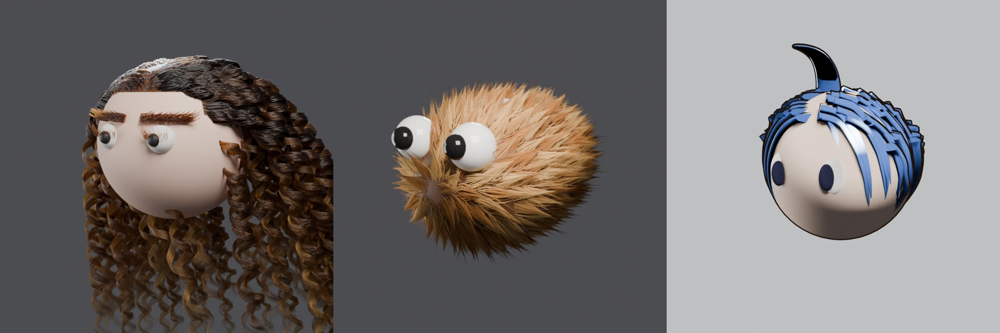
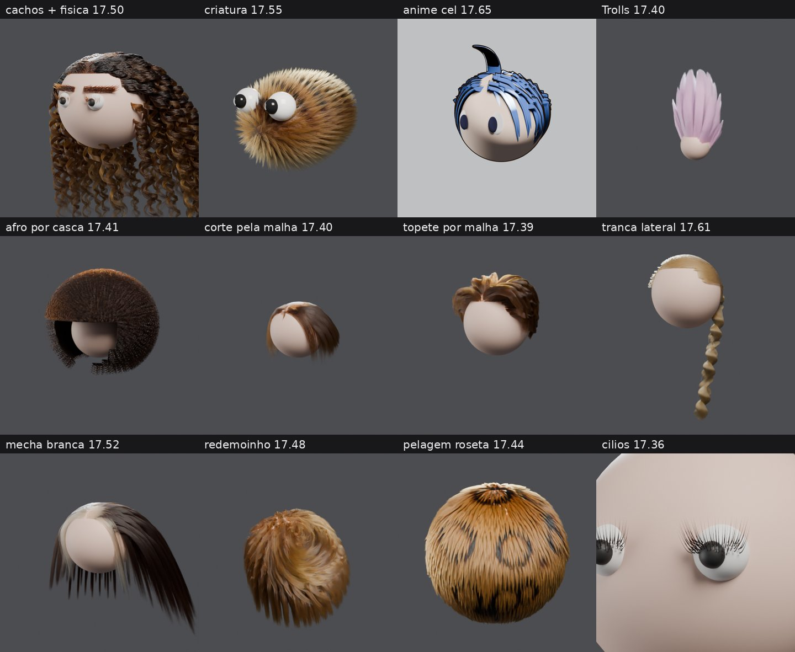
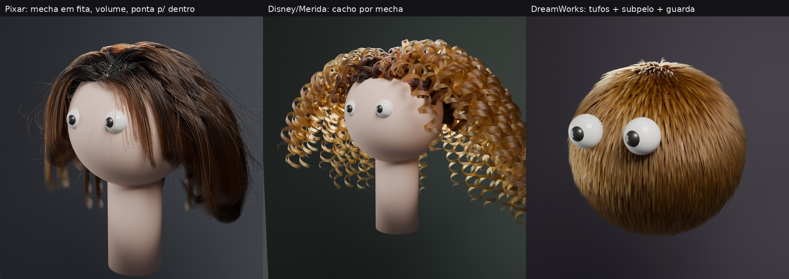
Quero... faço
| Quero | Faço |
|---|---|
| Mais de 10.000 fios por m² | Node Value ligado no Density. O campo do painel trava. |
| Mecha de desenho, sem careca | Clump com Shape 0,25 |
| Cacho definido | Clump, depois Curl. Frequency = voltas por metro ÷ 3 |
| Cada mecha com seu cacho | Random Value com ID = guide_curve_index |
| Fio solto bonito | 4% dos fios com Noise, antes do Curl |
| Muitas versões rápido | Um Integer no Seed de todos os nodes |
| Risca seca | Scalp em duas ilhas + Group ID pelo lado da raiz |
| Ponta virada | Roll Direction = posição da raiz (para fora) ou o negativo (para dentro) |
| Volume na raiz | Normal do Interpolate empurrando o fio |
| Física sem desabar | Bendiness 0, Substeps 40 |
| Penteado sem esculpir | GR Guias Procedurais num Curves vazio |
| Rabo de cavalo, coque | GR Rabo de Cavalo |
| Silhueta sem esculpir guia | Malha proxy: GR Forma por Malha |
| Vento | Custom Force no Effectors: entrada Vento da GR Física Estilizada |
| Cabelo seguir animação | Deform Curves on Surface no fim |
| Menos fios, mesma cobertura | Scalp com a cor da raiz |
| Cards para jogo | GR Hair Cards e Convert > Mesh |
| Traço de desenho | GR Contorno |
| Groom pesado de repente | Ponta Virada antes do Cacho, Subdivisão 0 ou 1 |
| Cada cópia diferente | GR Semente do Objeto nos Seeds |
| Pelo seguindo uma direção | GR Pentear por Curva |
| Cel-shading no cabelo | GR Normal da Malha + GR Cabelo Cel |
| Reprodução lenta | Node Bake no fim |
| Desenhar as guias | GR Guias Desenhadas (Grease Pencil) |
| Máscara de região sem pintar | GR Máscara por Posição |
| Balanço sem física | GR Balanço nas guias |
| Região com direção própria | Segundo conjunto de guias + GR Transição |
As regras que mais pesaram
| Regra | Por quê |
|---|---|
| Ponta Virada antes de Onda e Cacho, Subdivisão 0 ou 1 | 6,8 s viraram 0,7 s |
| Deform Curves on Surface é o último node de forma | antes, a raiz descola; depois dele, padrão por posição escorrega |
| Feche a topologia do scalp antes de pentear | Triangulate re-sorteia todas as raízes |
| Scalp pintado com a cor da raiz | 60 mil fios cobrem como 300 mil |
| Escala de objeto não aplicada | o groom escala junto |
| Shrinkwrap na cabeça depois do Braid | o Braid afunda 58% do trecho do crânio |
| Normal de uma malha lisa no shader | cel-shading e pelo pictórico com 2 nodes |
| Node Bake para reproduzir | 353 ms viram 9 ms por quadro |
| Região com direção própria: segundo conjunto de guias + GR Transição | a direção das guias domina; as raízes dos dois ramos são idênticas |
| Exportar em USD | Alembic perde todos os atributos (cor por mecha, UV da raiz) |
| Multidão com Shift+D do conjunto | Alt+D empilha o cabelo na cabeça original; Collection Instance repete igual |
A biblioteca pronta
O arquivo laboratorio/receitas_grooming.blend tem 35 node groups e 5 materiais prontos, com nomes começando por "GR" e entradas em português. Todos foram testados abrindo o arquivo do zero.
Como usar
- Edit > Preferences > File Paths > Asset Libraries > +. Aponte para a pasta
laboratorio. - No Geometry Nodes do seu Curves: Shift+A, a biblioteca, os grupos GR.
- Ordem: GR Densidade Livre → GR Mecha Estilizada → GR Volume na Raiz → GR Strays em Arco → GR Ponta Virada → GR Onda S ou GR Cacho por Mecha → GR Cor por Mecha → Set Hair Curve Profile.
- Para variações, ligue um único node Integer no Seed de todos.
Toda entrada dos grupos tem dica ao passar o mouse, com os valores medidos. A pasta laboratorio/exemplos/ tem o arquivo de partida comeco_rapido.blend e três cenas prontas feitas só com a biblioteca: cacheada com vento, criatura pictórica e anime com cel-shading. Nenhum arquivo externo.
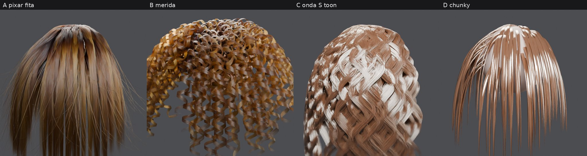
Estilizado
Mecha em fita (Pixar)
Como fazer
- Clump Hair Curves: Guide Distance 0,02, Factor 1, Preserve Length ligado.
- Shape 0,25. É a receita de um node só.
- Quer mais controle? Shape 0, e no Factor ligue Spline Parameter → Map Range (From 0 a 0,3, To 0 a 1, Clamp). Tip Spread 0,004.
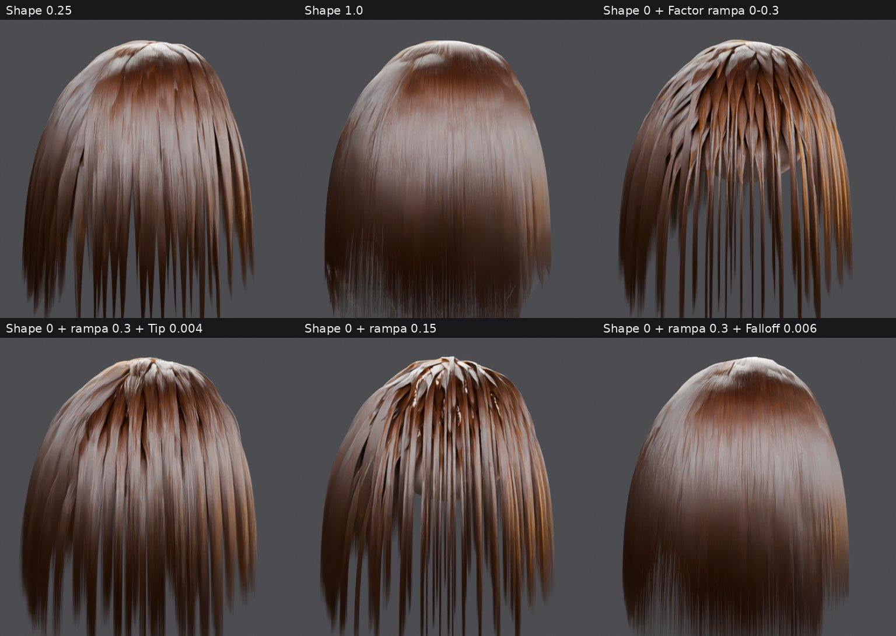
Cachos (Merida)
Como fazer
- Clump primeiro (Shape 0,25), depois Curl Hair Curves com Existing Guide Map ligado.
- Frequency ≈ voltas por metro ÷ 3. Merida: Radius 0,01, Frequency 9 a 10. Mola apertada: Radius 0,007, Frequency 20.
- Subdivision 2. A 3 fica igual no render com o dobro de pontos.
- Variação: Random Value com ID = Named Attribute (Integer)
guide_curve_indexno Radius e na Frequency.
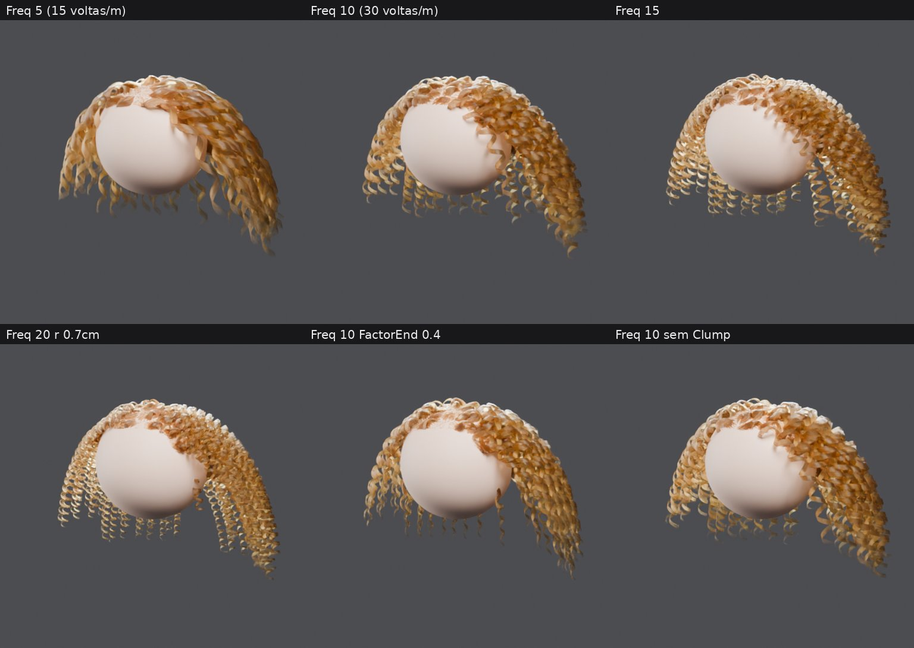
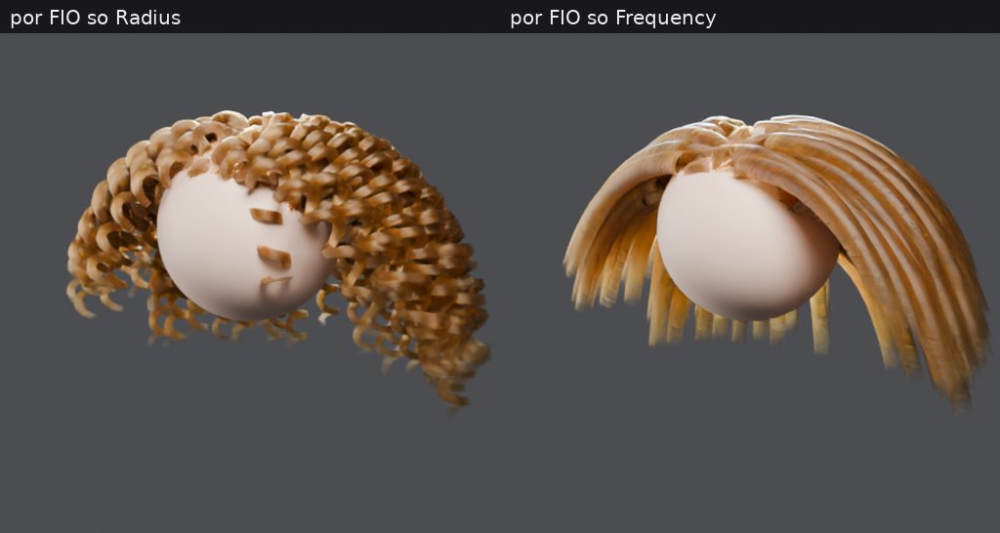
Onda de desenho (Rapunzel)
Como fazer
- Subdivide Curve, Cuts 2.
- Offset de um Set Position = eixo lateral × seno × rampa.
- Eixo lateral: Normalize(Cross(Tangent; 0,0,1)). Seno: Sine(Spline Parameter Length × 2π ÷ período + fase por mecha).
- Amplitude menor que o tamanho da mecha: 1,5 cm com período de 10 cm. Pronto em GR Onda S.
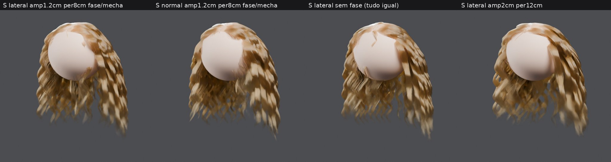
Cor de desenho
Como fazer
- Random Value com ID =
guide_curve_index→ Store Named Attribute (Float, Curve) chamadomecha_rand. - No shader: Attribute
mecha_rand→ Map Range (0,3 a 0,65) → Melanin. - Raiz escura: Hair Info → Intercept → Map Range → soma na melanina. Em ruivo e loiro, escureça pouco.
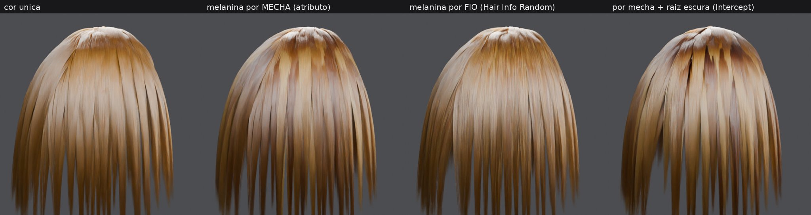
Fio solto em arco
Como fazer
- Curve Info → Random → Compare (Less Than 0,04).
- Liga no Factor de um Hair Curves Noise: Distance 0,04, Shape 0,7, Offset per Curve 1, Cumulative ligado.
- Antes do Curl. Depois dele, o Cumulative multiplica pela quantidade de pontos e os fios explodem.
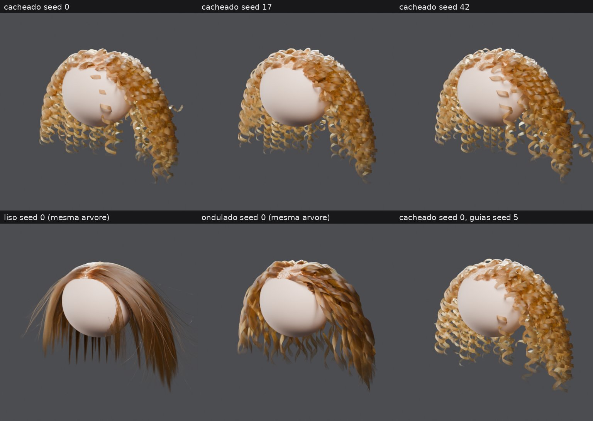
Risca seca
Como fazer
- Rasgue o scalp na risca (duas ilhas). Interpolate com Part by Mesh Islands.
- Create Guide Index Map com Group ID = Compare(Curve Root → Root Position X > 0).
- Clump com Existing Guide Map ligado, sem ligar o Guide Index. Ligado, o Clump grava um mapa errado para os nodes depois dele.
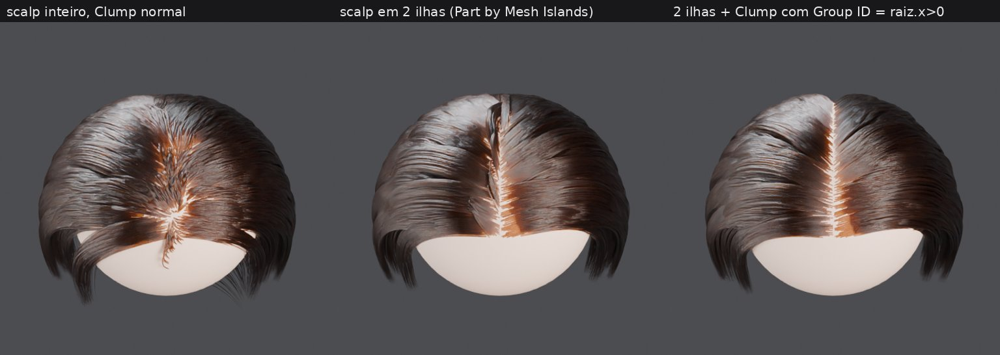
Ponta virada
Como fazer
- Roll Hair Curves, Random Orientation 0.
- Roll Direction = Curve Root → Root Position: a ponta vira para fora. Com Scale −1: enrola para dentro.
- O Roll Direction não é eixo: é para onde a ponta enrola.
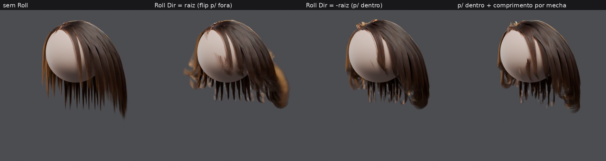
Volume na raiz e comprimento por mecha
Como fazer
- Store Named Attribute (Vector, Curve)
n_raizcom a saída Surface Normal do Interpolate. - Set Position: Offset =
n_raiz× Map Range(Spline Parameter Factor, 0 a 0,15 → 0 a 0,03, Clamp). Topete. - Comprimento por mecha: Random Value (0,7 a 1, ID da guia) no Length Factor do Trim.
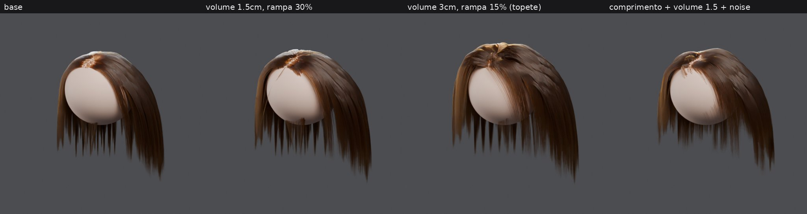
Franja
Como fazer
- Vertex group
franjana frente do topo. - Trim (Replace Length 0,09, Mask = franja), depois Displace Hair Curves (Vector 0; −0,06; −0,03, Factor = franja).
- Shrinkwrap Hair Curves na cabeça com Above Surface 0. O padrão 0,5 achata o groom inteiro.
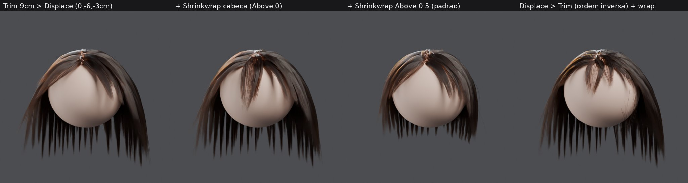
Pelo de personagem (DreamWorks)
Como fazer
- Interpolate denso (1,5 milhão por m²) → Clump Guide Distance 0,008, Shape 0,25.
- Sem clump, vira feltro. Shape 0 abre a pele.
- Camadas: subpelo curto e denso + pelo de guarda raro e grosso, cada um num ramo, juntos por Join Geometry.
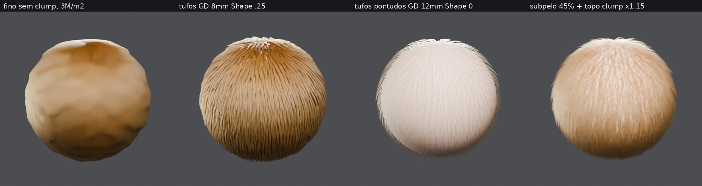
Trança e mecha de malha
Como fazer
- Trança grossa: Braid Hair Curves com Shape 0 e Factor Min 0,7. Interpolate com Distance to Guides 0,02.
- Mecha de malha: Resample 24 → Set Hair Curve Profile → Curve to Mesh com perfil achatado.
- Ligue um node Radius no Scale do Curve to Mesh. Solto, cada mecha vira um tubo de 1 metro.
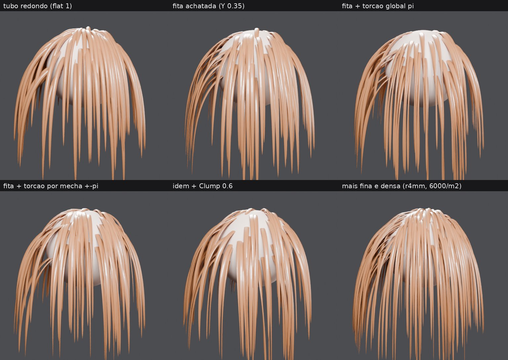
Penteado sem esculpir
Guias procedurais
Como fazer
- Crie um objeto Curves vazio e aponte o Surface para a hair cap.
- Generate Hair Curves: Poisson Disk, 4.000 por m² (cerca de 200 guias), 12 pontos.
- Set Position com uma parábola: sai pela normal, vai para o lado da risca, cai com a gravidade.
- Shrinkwrap na cabeça, Above Surface 0. Daí em diante, a cadeia normal.
- Pronto em GR Guias Procedurais. Bob: para fora 0,4, lado 0,35, gravidade 1,2. Espetado: para fora 1,2, gravidade 0.
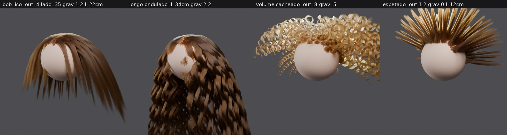
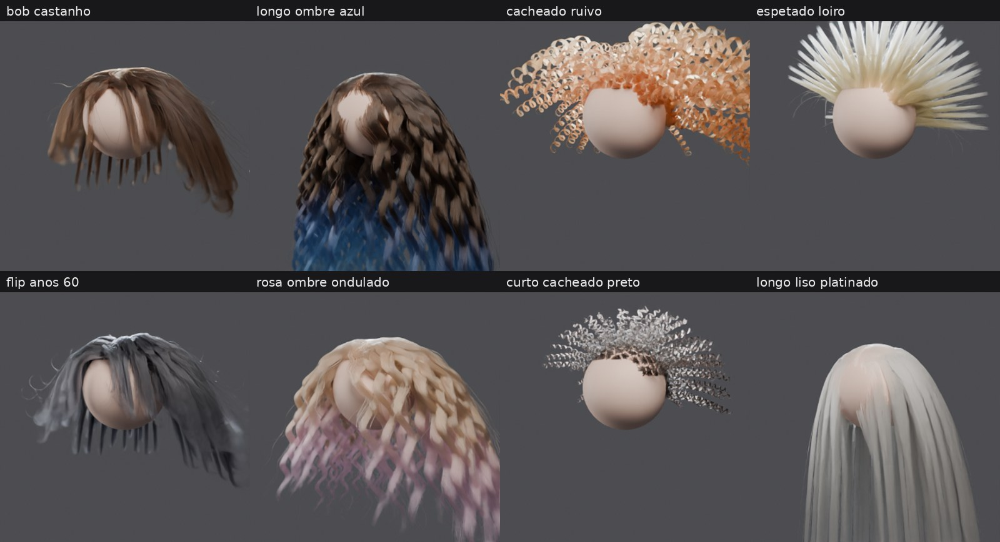
Guias desenhadas com Grease Pencil
Como fazer
- Desenhe poucos traços em volta da cabeça.
- No Curves vazio: GR Guias Desenhadas com o Grease Pencil ligado. Por dentro: Grease Pencil to Curves → Set Attachment Surface.
- Daí a cadeia normal. 14 traços viraram 11,5 mil fios.
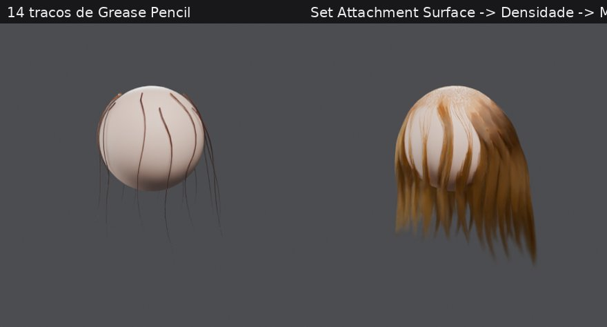
Presos e rosto
Rabo de cavalo, maria-chiquinha e coque
Como fazer
- GR Rabo de Cavalo depois da Densidade Livre: cada fio vai até o elástico, cola no crânio e cai.
- Maria-chiquinha: ligue no ponto de amarração um vetor com X = sinal do X da raiz × 8,5 cm.
- Coque: enrole a cauda numa espiral com a mesma fase para todos os fios, como uma corda.
- Cacho ou onda na cauda: o "Começa em" tem que ser maior que o "Até a amarração".
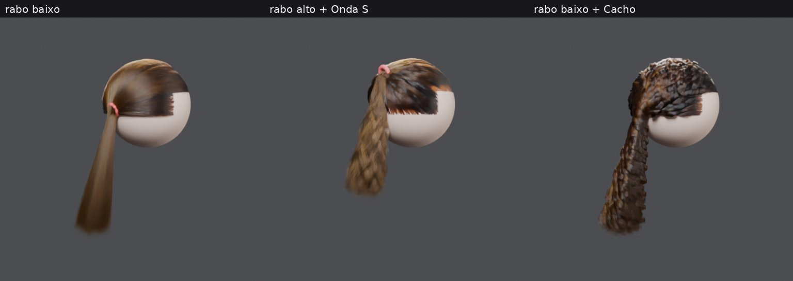
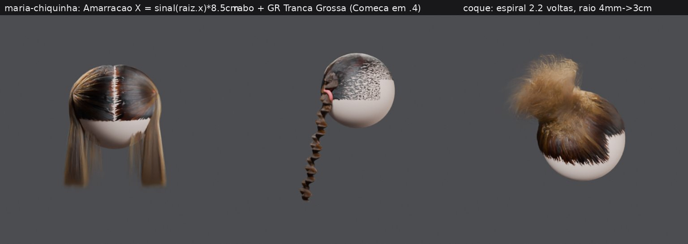
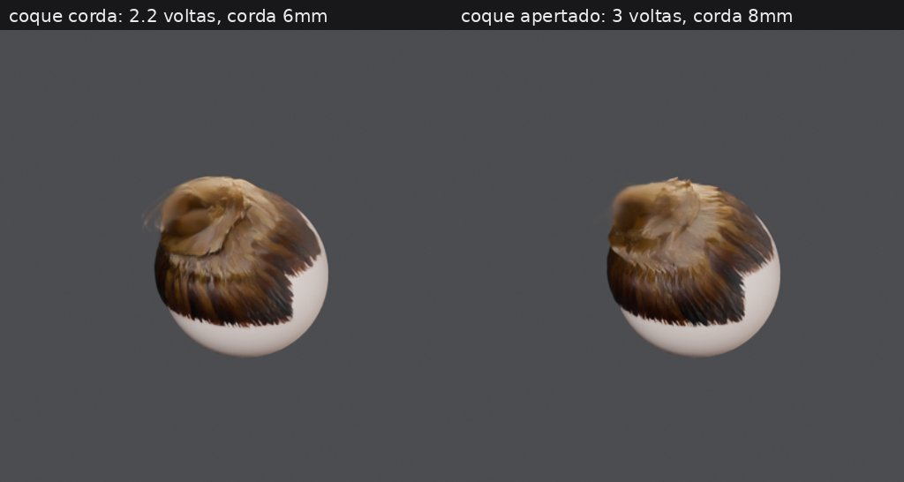
Sobrancelha, barba e bigode
Como fazer
- Recorte cada região da cabeça numa malha própria, como uma hair cap.
- Um Curves vazio por região com GR Guias Procedurais direto como gerador. Pelo curto não precisa de Interpolate.
- Sobrancelha: 1,4 cm, lado 1,2, gravidade −0,4. Barba: 1,8 cm, gravidade 1. Clump de 4 a 5 mm.
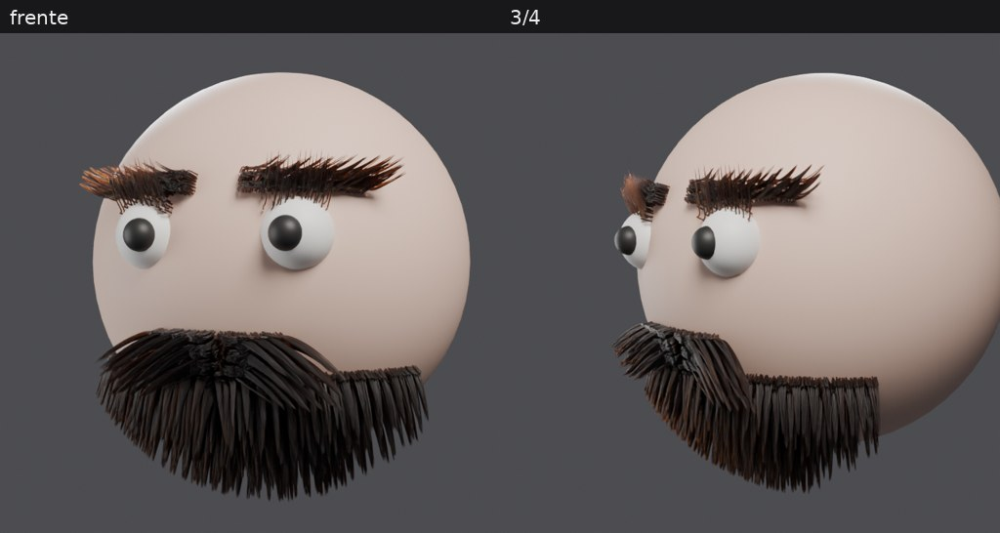
Física
Simular sem perder o penteado
Como fazer
- Snap to Nearest Surface nas guias. Sem o UV de fixação, a simulação explode.
- Modificador 1, só nas guias: Hair Dynamics em Physics (Experimental), Bendiness 0, Root Bendiness 0, Substeps 40.
- Modificador 2: a cadeia de groom (Interpolate e o resto).
- Colisão: modificador Collider na cabeça inteira, dentro de uma coleção, e a coleção no Effectors Collection. Surface Collision no scalp explodiu em todos os testes.
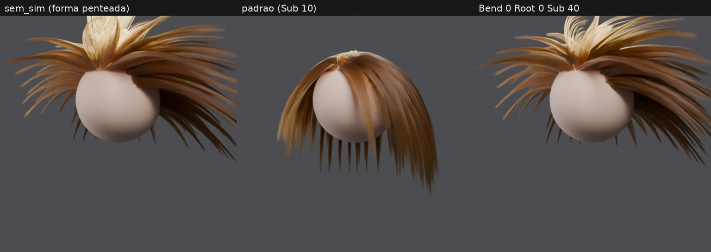
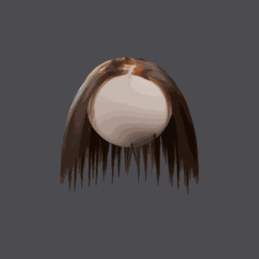
Forma por malha
Uma malha simples em volta da cabeça define a silhueta. Trocar de corte vira trocar de malha.
Silhueta por malha proxy
Como fazer
- Modele uma esfera deformada em volta da cabeça, aberta no rosto e embaixo.
- Nas guias, antes do Interpolate: Object Info (Relative) → Geometry Proximity (Faces).
- Mix Vector entre Position e a posição da Proximity, Factor = Spline Parameter → Map Range (0 a 0,35) → Set Position.
- Pronto em GR Forma por Malha.
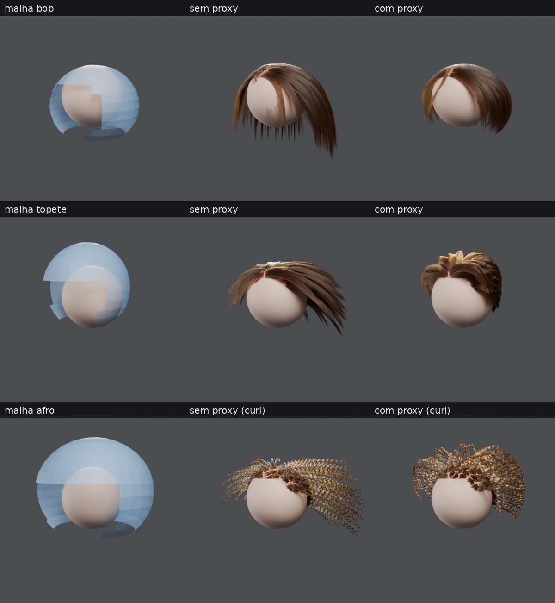
Corte reto e cabelo Trolls
Como fazer
- Corte: Position → Normalize → Raycast na malha → NOT Is Hit → Delete Geometry Point. O fio cai natural e para na malha. Pronto em GR Corte pela Malha.
- Trolls: cada fio vira reta da raiz até onde o raio bate na malha, na direção da normal + (0; 0; 1,5). Clump Guide Distance 4 cm, Factor 0,45. Pronto em GR Comprimento até a Malha.
- A malha precisa conter todo o scalp. Raiz fora da malha = fio que desce.
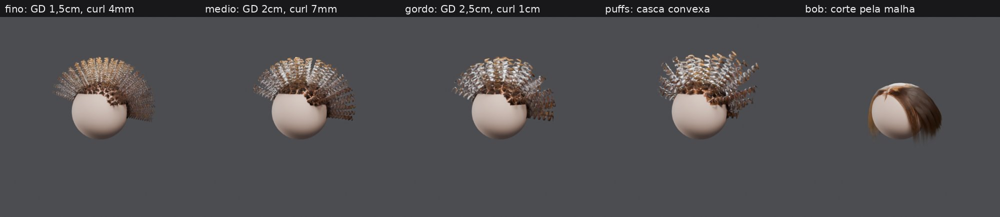
Afro que enche
Como fazer
- A malha do afro é renderizada, marrom quase preto. Ela é o volume.
- Um Curves com Surface nessa malha: GR Guias Procedurais, 3,5 cm, para fora 1, gravidade 0, 150.000 por m².
- Resample 40 → Clump 8 mm → Curl raio 3 mm, Frequency 45, Subdivision 0.
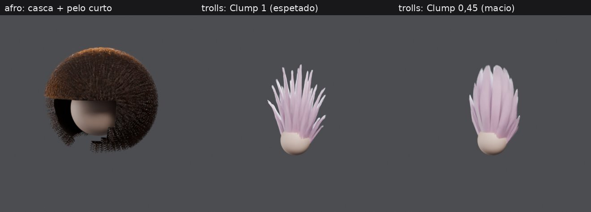
Animação
Vento
Como fazer
- Scene Time Seconds → seno de 1,5 s → rajada de 20% a 100% no X.
- Mais Noise Texture 4D (Vector = Position, W = Seconds) − 0,5, para as mechas saírem de fase.
- Soma → Custom Force → entrada Effectors do Hair Dynamics. Força 0,04 = brisa; 0,12 = vento de cena.
- Pronto na entrada Vento da GR Física Estilizada.
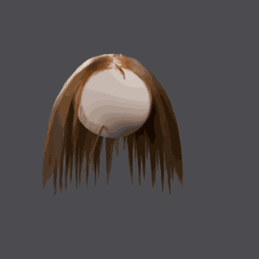
Cabelo crescendo
Como fazer
- No fim da cadeia, antes do Profile: Trim Hair Curves com Replace Length desligado.
- Length Factor = Clamp(Seconds × 0,8 − atraso por mecha, 0,02).
- Atraso = Random 0 a 0,4 com ID =
guide_curve_index. Pronto em GR Crescer.
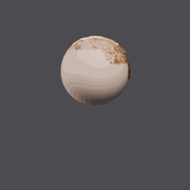
Transição entre penteados
Como fazer
- Resample 64 depois da mecha: os dois penteados precisam da mesma contagem de pontos.
- Ramo B com o cacho (Subdivisão 0). Sample Index de B → Mix com a posição de A → Set Position.
- Fator animado com atraso por mecha. Parado em 0,5, vira um terceiro penteado. Pronto em GR Transição.
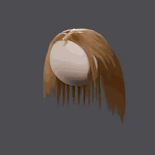
Cabelo flutuando, sem física
Como fazer
- Nas guias, depois de um Resample 24: Noise Texture 4D, Vector = Position, W = Seconds × 0,4, Scale 7.
- Color − 0,5, vezes Spline Parameter1,5 × 0,2 → Offset do Set Position. A raiz fica parada e a onda anda pelo fio.
- Pronto em GR Flutuar. Serve de vento barato para personagem de fundo.
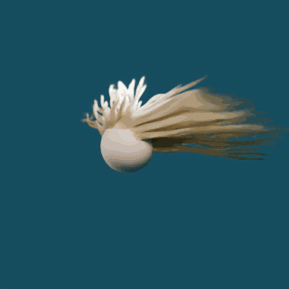
Balanço, susto e mão, sem física
Como fazer
- GR Balanço nas guias: gira cada ponto em volta da raiz com um seno defasado ao longo do fio. Atraso 0 balança em bloco; 2,5 rad dá o follow-through.
- Susto: anime o Levanta da GR Pentear por Curva. Um Empty com a escala Z ligada no Levanta vira um controle na viewport.
- Mão passando: GR Desviar de Objeto depois do Shrinkwrap. O cabelo abre caminho para um Empty animado.
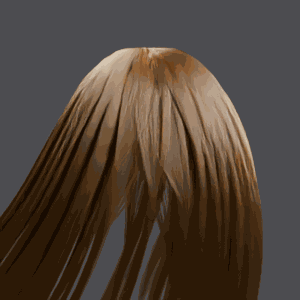
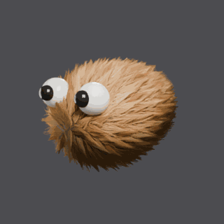
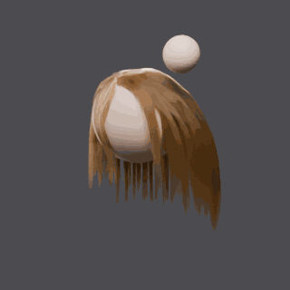
Sobrancelha expressiva
Um Empty com a escala ligada num offset levanta e franze a sobrancelha, mas descola a raiz. Para produção: shape keys na região da sobrancelha e Deform Curves on Surface no fim; a raiz fica a 0,3 mm da pele.
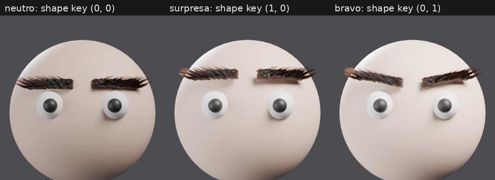
Cabeça que deforma
Como fazer
- Ligue Add Rest Position no scalp (Object Data).
- Deform Curves on Surface é o último node de forma, depois de Clump, Curl e cortes.
- Tudo que lê posição (textura, máscara, distância) vem antes dele, ou lê
surface_uv_coordinate.
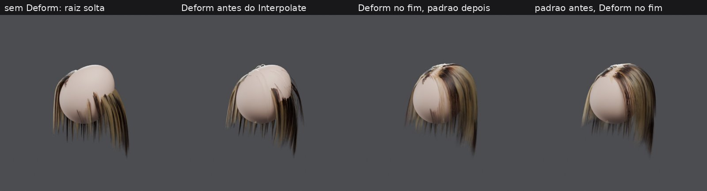
Produção
Scalp com a cor da raiz
Zero node. Pinte o scalp com a cor da raiz. Medido por máscara: 60 mil fios por m² com scalp pintado mostram menos pele que 300 mil sem pintar.
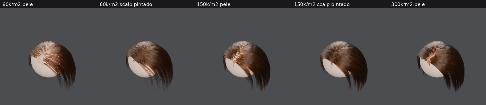
Multidão: LOD por distância
Como fazer
- Logo depois do Interpolate: distância da raiz até a câmera (Object Info em Relative).
- Map Range de 1 m a 8 m → fração de 1 a 0,04 → Random Boolean → Delete Geometry (Curve).
- Depois do Profile: raio × 1/√fração, para manter a cobertura. Pronto em GR LOD por Câmera.
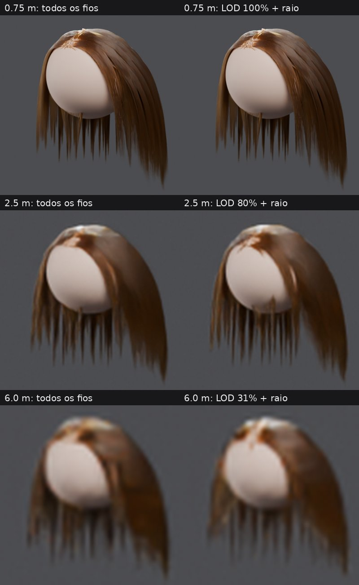
Hair cards para jogo
Como fazer
- Densidade Livre com 8.000 a 20.000 por m²: um card por fio.
- Set Curve Normal em Free com Cross(Tangent; n_raiz): o card deita no crânio. Só a normal deixa ele de pé.
- Curve to Mesh com perfil em linha e Radius no Scale; UV = Store Named Attribute 2D Vector, Face Corner,
UVMap. - Object > Convert > Mesh: o UV vira UV map real e o FBX sai com ele. Pronto em GR Hair Cards.
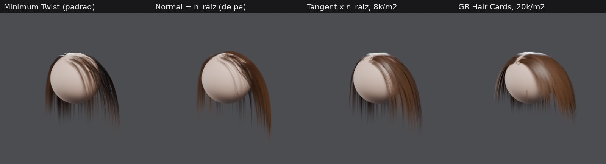
Custo e ordem da cadeia
Medido com 15 mil fios. A GR Ponta Virada tem subdivisão própria: depois do cacho, com Subdivisão 2, a cadeia foi de 0,7 s para 6,8 s e de 2 para 8 milhões de pontos. Ponta Virada antes de Onda e Cacho, Subdivisão 0 ou 1. Na tela, 0, 1 e 2 ficaram iguais.
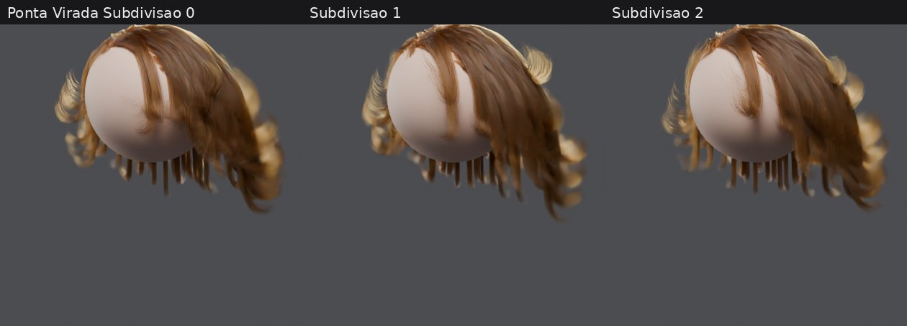
Procedural e depois esculpir
Aplique (Apply) o modificador da GR Guias Procedurais. As guias viram curvas reais, com surface_uv_coordinate e id: abrem no Sculpt Mode e servem para física e Deform. Chegue a 80% no procedural e esculpa o resto.
Cada cópia com cabelo diferente
Como fazer
- Self Object → Object Info → Location → Hash Value (Vector).
- Esse inteiro no Seed de todos os grupos e no ID de Random Values: tamanho da mecha, voltas por metro, comprimento, cor.
- Duplique cabeça, scalp e cabelo juntos. Cada cópia sorteia o seu. Pronto em GR Semente do Objeto.
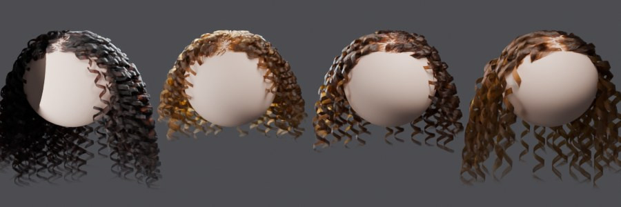
O mínimo que já é estilizado
Value → Interpolate → Clump Shape 0,25 → Profile → Material. Cinco nodes, 46 ms, e já lê como mecha de desenho. Tudo depois é personalidade.
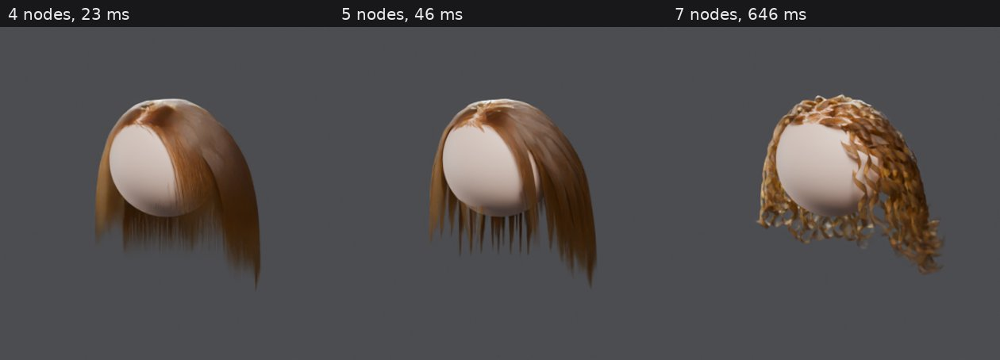
Reproduzir groom pesado: Bake
Node Bake no fim da cadeia, modo Animation. Com 1,4 milhão de pontos animados, a reprodução foi de 353 ms para 9 ms por quadro. Custa disco: 23 MB por quadro nessa densidade.
Fio saindo pela pele
O próprio Interpolate põe 1,7% dos pontos dentro da cabeça. Um Shrinkwrap antes de Onda e Cacho reduz para 1,3% por 0,85 s; no fim zera, mas custa 9× mais. Use o do fim só no render.
Shape das curvas no Cycles
Rounded Ribbons (padrão) e 3D Curves ficam a menos de 7% de brilho na vista normal. Em close de fio grosso, o Ribbon sai quase 2× mais claro. Ajuste a cor no Shape do render final.
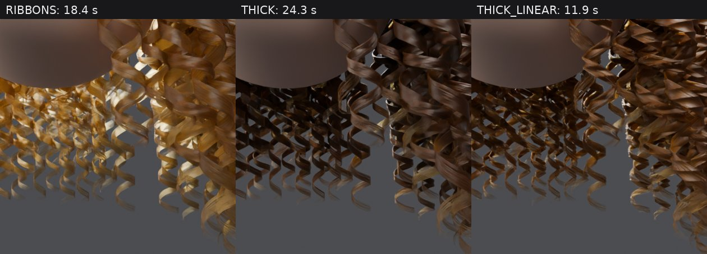
Comprimento pintado e mecha por região
Como fazer
- Comprimento:
surface_uv_coordinate→ Image Texture → Map Range (0,35 a 1,1) → Trim Length Factor. - Mecha larga no topo e fina embaixo: dois ramos de GR Mecha Estilizada do mesmo Interpolate, misturados pela GR Transição com a altura da raiz.
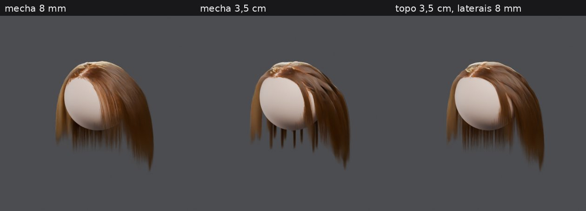
Chapéu e ombros
Como fazer
- Chapéu: copa e aba em objetos separados. Shrinkwrap na cabeça com Factor = Raycast para cima na copa ou para baixo na aba. Pontos furando a copa: 1.568 → 0.
- Ombros: Shrinkwrap no tronco com Above Surface 0. Pontos dentro dos ombros: 9,8% → 0,2%.
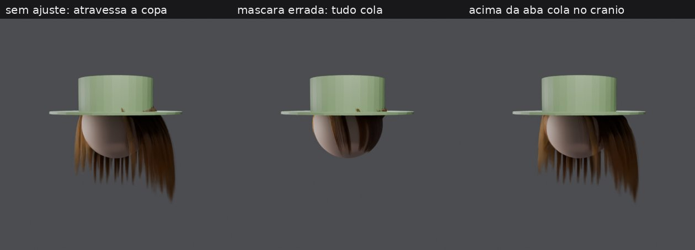
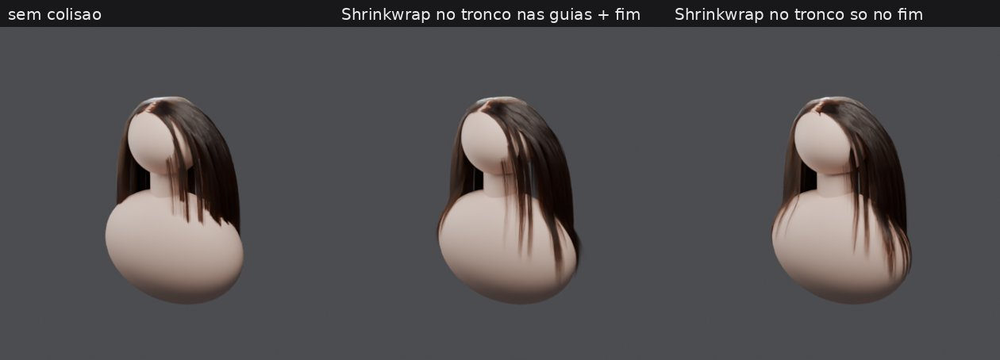
Pipeline: USD, Alembic e custo de render
| Formato | O que chega do outro lado |
|---|---|
| Alembic | fios, pontos e raio. Nenhum atributo, nem cor, mesmo com as opções ligadas |
| USD | fios, raio e quase todos os atributos: cor por mecha, guide_curve_index, surface_uv_coordinate |
No render, 28 vezes mais fios custaram só 2,2 vezes o tempo (2,4 mil fios em 5,1 s; 70 mil em 11,4 s). O caro é avaliar a cadeia, não renderizar.
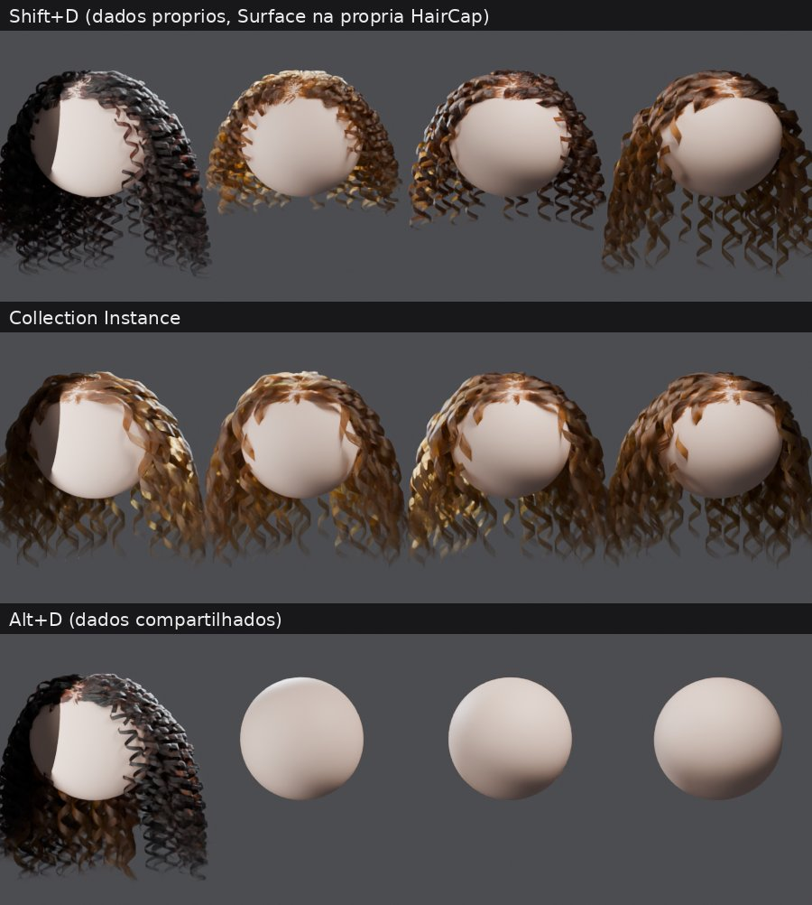
Um groom, várias cabeças
A mesma cadeia procedural serviu numa cabeça redonda, ovo e larga sem mudar nenhum valor. Para criança, use escala de objeto não aplicada: todas as distâncias escalam juntas.
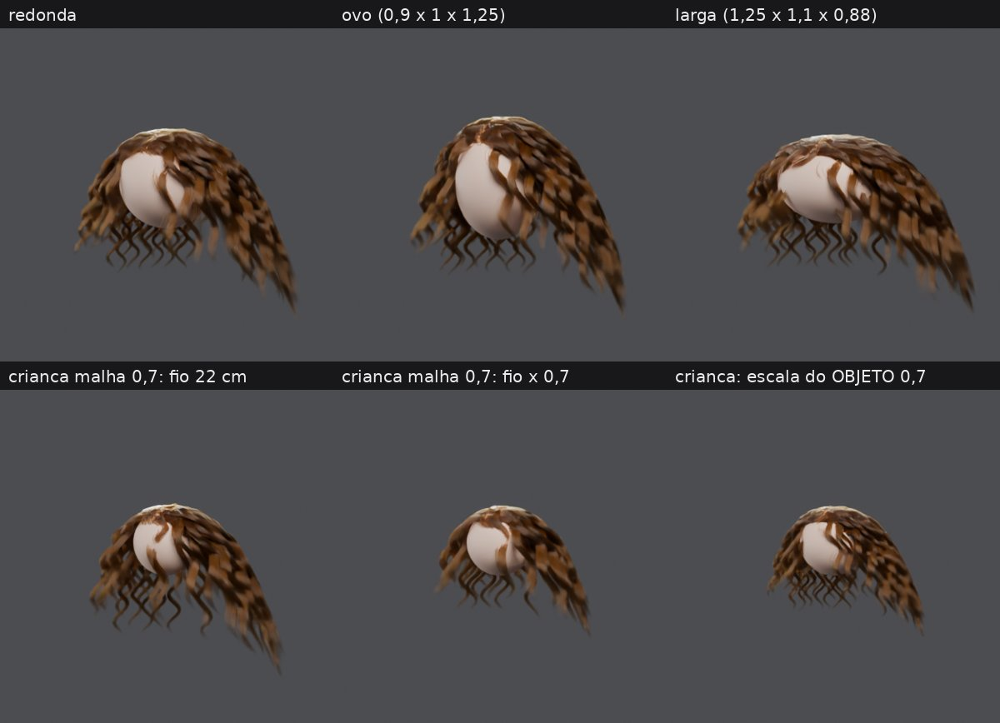
Detalhes e estilo
Cílios
Como fazer
- A superfície é a pálpebra: uma faixa da esfera do olho, logo acima do centro, 6% maior.
- GR Guias Procedurais: 9 mm, para fora 1, gravidade −1,3 (curva para cima), 250.000 por m².
- Raio 0,5 mm, Shape 0,8. Estilo Disney: só o canto externo, 6 fios grossos.
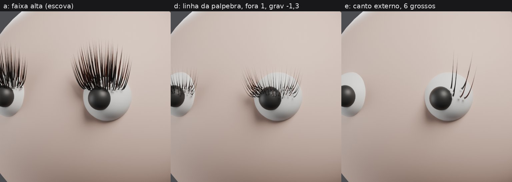
Pelagem com padrão
Como fazer
- Textura na raiz: Wave Bands (listra), Voronoi (mancha), anel do Voronoi (roseta).
- Store Named Attribute
padraopor curva. - Trim com Length Factor = 1 − 0,4 × padrao, e o mesmo atributo na melanina. O padrão vira relevo.
Redemoinho
Como fazer
- Nas guias: Vector Rotate em volta da coroa, eixo = normal da coroa.
- Ângulo = Spline Parameter × falloff (1 na coroa, 0 a 7 cm) × força.
- Shrinkwrap depois. Força 3,5 só em cabelo curto; em fio longo, até 1,5.
Contorno de desenho
Como fazer
- Na malha das mechas: Flip Faces → Set Position (Normal × −2,5 mm) → material do contorno → Join com a malha.
- Material: Mix entre Emission preta e Transparent com Factor = Maximum(Backfacing; 1 − Is Camera Ray).
- Só Backfacing deixa o cabelo inteiro preto: a casca bloqueia a luz. Pronto em GR Contorno.
Mecha colorida, mecha branca, molhado e ahoge
Como fazer
- Selecione por mecha: Random Boolean com ID =
guide_curve_index(10% das mechas), ou pela posição da raiz (frente, coroa). - Grave a seleção num atributo e use no shader (tinta, melanina) e no Factor de Curl ou Set Position.
- Ahoge: a mecha mais perto da coroa ganha um arco para cima com Set Position.
- Trim com Length Factor acima de 1 alonga: 1,5 leva 24 cm a 36 cm.
Pelo de criatura penteado por curva
Como fazer
- Desenhe um objeto Curve sobre o corpo, no sentido do pelo.
- Curve to Points (Evaluated) → guarda a Tangent → Sample Nearest da raiz → projeta a direção no plano da pele.
- Direção = Mix(fluxo; normal; 0,35) → raiz + direção × comprimento. Pronto em GR Pentear por Curva.
NPR estilo anime
GR Mecha Chunky + Toon + GR Contorno. O que funcionou: poucas mechas largas e sem torção (3.000 por m², raio 1,8 cm, torção 0). Com 9.000 fitas torcidas vira capacete bagunçado. Fundo claro só para a câmera, senão ele ilumina e lava o Toon.
Cabelo que chega ao chão
Nas guias, a profundidade de cada ponto abaixo do piso vira deslocamento para fora: o cabelo esparrama em vez de atravessar. Shrinkwrap no chão empilharia tudo no ponto de contato. Pronto em GR Chão.
Meio preso
Sem node novo: GR Transição com A = solto, B = o mesmo cabelo pela GR Rabo de Cavalo, e Fator = altura da raiz (Smooth Step de 3,5 a 5,5 cm). O topo vai preso, o resto fica solto.
Trança lateral no ombro
GR Rabo de Cavalo com a amarração na nuca, de lado, e Para trás −0,5 (a cauda vai para frente), seguido da GR Trança Grossa. Ligue a cabeça na entrada nova da Trança Grossa: o Braid junta o fio inteiro na guia e afunda o trecho do crânio.
Pelo pictórico e cel-shading
Como fazer
- Guarde a normal da pele (pelo) ou de uma malha lisa em volta do cabelo num atributo.
- No shader: Attribute → Vector Transform (Normal, Object → World) → Normal do Toon.
- A luz agrupa em massas, como pintura. Cor por clump e sub-clump reforça a pincelada. Pronto em GR Normal da Malha + material GR Cabelo Cel.
Cortes: undercut, moicano, despenteado
Como fazer
- GR Máscara por Posição: um campo 0 a 1 por fio numa caixa suave (altura, lateral, frente). Serve em Trim, Transição, Clump.
- Undercut: Trim a 5% fora da máscara do topo. Limite a lateral, não só a altura.
- Moicano: raspado e crista (GR Comprimento até a Malha) misturados pela GR Transição com a máscara.
- Despenteado: Rotate e Noise nas guias, strays nos filhos. As mechas continuam coesas.
Texturas: afro, dreads, tranças box, cacho curto
Como fazer
- Afro que enche: casca renderizada + pelo curto cacheado nela. Recorte do rosto por elipse e Solidify de 2 cm na casca.
- Dreads: 2.200 fios por m², Onda S com período de 25 cm, Mecha Chunky redonda, relevo por Noise.
- Tranças box: GR Trança Grossa com Tamanho da trança 1,5 cm e Guias por fio 1.
- Cacho curto: o raio relativo ao comprimento manda. Raio ~15% do fio e uma volta dão cachinho de desenho.
Animal estilizado
Comprimento e cor por região com máscaras de posição: tufo na ponta da orelha, bochechas longas, queixo claro. Manchas de cor saem com Mix de cor no Toon, não com melanina: melanina baixa continua laranja.
Franjas e hairline
Como fazer
- Franja reta ou em bicos: GR Corte pela Malha com a borda da frente na altura da franja. A malha corta o penteado inteiro.
- Franja cortina: dois conjuntos de guias do mesmo scalp (cabelo e franja) misturados pela GR Transição com a máscara da frente. As raízes dos dois são idênticas.
- Hairline suave: campo de posição no Density Mask do Interpolate. Babyhairs: um segundo Interpolate só na faixa da borda, curto, com 150 mil por m².
Anime: anel de brilho
No material do GR Cabelo Cel: uma faixa na coordenada Object (não no Intercept, que sai em degraus) vira Emission somada ao Toon.
Cabeça modelada inclinada
Todo o groom é local ao objeto: mover o personagem não muda nada, e a gravidade das guias é o −Z do objeto. A entrada Gravidade do mundo da GR Guias Procedurais faz o cabelo cair reto mesmo com a cabeça girada.
Personagem final: cortina e balanço
Dois conjuntos de guias (cabelo e franja), cada um com GR Balanço, misturados pela GR Transição, risca em duas ilhas e sobrancelha por região. A primeira versão errou em dois pontos que as regras já previam: strays depois de um Resample que dobra os pontos, e balanço forte demais para franja curta.
Personagem inteiro com a biblioteca
Guias procedurais, física com vento, mecha, strays, cacho, cor, cílios, sobrancelha e scalp pintado numa cena só. Os grupos convivem sem ajuste; o que mudou foi design: Para trás 0,6 para a franja sair do rosto e cacho começando em 35% para o topo ficar liso.
_referencia/grooming/CEREBRO_GROOMING.md, seção 17; scripts e folhas em laboratorio/.Performance
- Viewport Amount no Interpolate: 0,1 a 0,3 enquanto pentear, 1,0 para render.
- Densidade real por objeto, não global. Corpo de gato 10.000 e mais; volume extra em pescoço 50.000. Um cavalo precisou de 3,5 milhões de filhos porque a distribuição é por área, não por guia. Use Distance to Guides e Density Mask para não gastar densidade onde não aparece.
- Desligue os deformadores enquanto esculpe guias. Ligue no fim.
- Reduza pontos por curva. Cada ponto é geometria no render.
- Seis milhões de fios bagunçados não são melhores que seis mil com camadas boas. A frase é de quem fez o gato fotorrealista.
blogs-jp-zh/ja-tenp-kukan-2025-10-hair-curves-fur.md; comunidade/blenderartists-1460445-...md; palestras/bcon2026-steve-chow-...md.Receitas de produção
O que artistas fizeram em projetos reais com este sistema. Cada receita vem de uma palestra da Blender Conference, transcrita na base.
Cabelo humano com risca (Bystedt, BCON 2023)
- Hair cap separada, vertex group da risca e hard edge dividindo em duas metades.
- Guias com Resample Curve a 15 pontos para forma detalhada.
- Duas camadas de clump, largo e fino, cada uma com seu seed e seu ruído.
- Noise com Offset per Curve ligado e escala reduzida ao longo da curva. Roll leve na ponta.
- Densidade por textura com Color Ramp cortando em 0,5, para resolver a calvície na risca.
- Risca: copie a cap, apague tudo menos a linha central pelo peso "Parting Center", e cole as raízes próximas nessa linha com Mix. Volume subindo na risca com Deform Curves on Surface e Surface Normal Displacement por proximidade.
- Store Named Attribute com uma cor por camada, só para depurar no viewport.
Fur curto e denso, gato British Shorthair (Steve Chow, BCON 2026)
- Antes de abrir o Blender, mapeie qual modificador resolve qual problema do pelo.
- Só duas regiões, cabeça e corpo, com a linha de corte atrás das bochechas. Regiões por vertex group.
- Clump, depois Curl, depois Frizz. Densidade dos clumps pela Guide Distance, com Existing Guide Map desligado no Clump. Muitos clumps, cada um suave. (Na 5.2, deixe o Curl com Existing ligado; ver o aviso do Clump.)
- Fendas onde a pele estica: Trim por textura pintada, com distribuição aleatória, comprimentos variados, ponta em diamante e curvatura variada. Sem fendas o gato vira pelúcia.
- Shader: Transparent BSDF por Light Path para a sombra interna não virar sujeira. Gradiente raiz-ponta por cima.
- Topcoat duplicado só depois que o shader do undercoat fechou: mais longo, mais aleatório, muito menos fios. É ele que dá a borda fofa.
Pelo de animal em escala (Kerstin Schmidbauer, BCON 2025)
- Referência por subespécie e estação; desenhe direção e mudanças de tipo por cima das fotos.
- Topologia e UV fechadas. UV sem overlap.
- Guias com 2 pontos até a direção estar definida no corpo inteiro. Densidade de guias uniforme.
- Um objeto por região anatômica: face, bochecha, orelha interna e externa, pescoço, corpo, cauda, patas. Cuidado nas costuras.
- Vertex group por região e por efeito (densidade, clump, noise, trim). Interpolate desligado enquanto pinta.
- Ordem: direção geral primeiro, detalhe individual depois. Trim com aleatoriedade e Frizz são os dois "essenciais para realismo".
- Shape key de cabelo não existe: Set Position com Mix entre a Position de dois objetos de cabelo por Sample Index, fator num driver. Quebra se a contagem de curvas mudar.
Groom para comercial com ator real (Christopher Strommer, BCON 2026)
- Empty Hair na malha, Sculpt, guias. Em minutos há um groom razoável; os assets do Asset Browser fazem o resto.
- Várias variações de groom (curliness, frizz, noise, clumpiness, cor) para o cliente escolher à distância.
- Partes do groom coloridas de forma diferente para discutir por e-mail.
- Fios soltos de propósito para pegar luz numa contraluz estourada.
- Passes: cabelo com hold-out, com Shadow Catcher, e sem hold-out para pintar de volta. Crescimento instantâneo de cabelo é um keyframe de 15 frames no Trim.
Hair cards a partir do groom, ainda editável (Sara Matsumoto, BCON 2024)
- Mecha em hair curves num plano, renderizada em câmera ortográfica: Depth, Normal, Position, AO.
- Resample Curve, depois Curve to Mesh com perfil Arc de 3 lados para card e Spiral para tubo. Curve Tangent no Tilt para o card seguir a superfície.
- UV construída com Capture Attribute e Store Named Attribute; raiz colada por Geometry Proximity.
- O resultado continua editável com os mesmos pincéis e assets.
Problemas comuns
| Sintoma | Causa provável | O que fazer |
|---|---|---|
| Interpolate não gera nada | Surface não atribuída, UV map errado, ou Rest Position sem malha em repouso | Conferir Surface e Surface UV Map; testar com Rest Position desligado |
| Filhos atravessam a pele | Guias sem colisão; ruído empurrou para dentro | Shrinkwrap no fim; Use Sculpt Collision ao pentear |
| Filhos flutuam ou entram na malha subdividida | Subdivision Surface não aplicado no scalp | Aplicar o Subdivision no scalp, ou hair cap separada |
| "Invalid surface UVs" | UV sobreposta, costura espelhada quase fundida, ou UV Smooth do Subdivision | Sem overlap; Merge by Distance no UV Editor; UV Smooth em None |
| Cabelo pula ao mudar densidade | Guia promovida muda de ID | Definir densidade cedo |
| Clump sumiu | Mexeu no Guide Index (-987654) | Voltar ao valor; usar Guide Distance e Existing Guide Map |
| Curl virou "permanente" | Curl seguindo um mapa esparso | Existing Guide Map ligado no Curl logo depois do Clump; se desligar, Guide Distance igual ao do Clump |
| Textura ligada no Trim não faz nada | Input não ligado no editor | Entrar no grupo e ligar no input certo |
| Careca depois do rig deformar | Buraco na densidade de guias, ampliado pela deformação | Adicionar guias no vazio |
| Pelo nascendo dentro da boca | Superfície fina embaixo do pincel | Separar essa parte da malha |
| Marca escura de comprimento desigual | Grow/Shrink não pegou todos os fios | Apagar e re-adicionar com Density na área |
| Curvas flutuando após editar topologia | Superfície mudou | Snap to Nearest Surface |
| Viewport travando | Densidade alta com deformadores ligados | Viewport Amount baixo; desligar deformadores; dividir em objetos |
| Pincel não faz nada | Use Sculpt Collision em malha densa | Desligar colisão; Shrinkwrap depois |
| Pelo denso escuro por dentro | Sombra sólida entre camadas | Transparent BSDF por Light Path |
| Sim explode | Curva dentro de collider; escala do objeto | Shrinkwrap antes; aplicar escala |
| Sim com jitter | Filhos regenerados por frame | Simular guias, interpolar depois |
grooming/CEREBRO_GROOMING.md seção 14, com a origem de cada linha.Palestras para assistir
Todas transcritas na base, com resumo técnico em português. Os links abrem no YouTube.
Glossário
- Guia
- Curva original no objeto Curves. A única coisa que você esculpe.
- Filho
- Curva gerada pelo Interpolate a partir das guias. Não é editável.
- Cage
- Desenho das guias por cima do resultado, no modo Sculpt. Nenhum modificador filtra o cage.
- Hair cap
- Malha de crescimento separada da cabeça, com a topologia que o cabelo pede.
- Guide map
- Atributo
guide_curve_index: qual guia cada curva segue no clump, no curl e na trança. - Existing Guide Map
- Toggle que faz o node reaproveitar o guide map que já está na geometria.
- Surface Rest Position
- Interpolar sobre a malha em repouso, para o Deform Curves on Surface animar depois.
- Density Mask
- Float de 0 a 1 que multiplica a densidade. Vem de atributo pintado.
- Field
- Valor que varia por elemento. Todo float dos hair nodes aceita um.
- Undercoat e topcoat
- As duas pelagens de um animal: densa e curta por baixo, longa e rala por cima.
Fontes
Tudo aqui vem da base local em Estudos Extras Curriculares/_referencia/. Os caminhos citados em cada seção são relativos a _referencia/grooming/, _referencia/blender-manual-5.2-lts/manual/ e _referencia/blender-python-api-5.2/api/.
- Síntese:
grooming/CEREBRO_GROOMING.md, com cada afirmação citada. - Como cada node funciona por dentro:
grooming/essentials-internals/, dump dos 27 node groups da Essentials. - Palestras transcritas:
grooming/palestras/, 10 arquivos. - Devs e comunidade:
grooming/blender-dev/egrooming/comunidade/, 40 fontes. - Valores e receitas:
grooming/blogs-jp-zh/, 23 artigos. - Manual oficial 5.2 LTS e API Python 5.2, completos.
Figuras dos nodes e do shader: manual do Blender, CC-BY-SA 4.0. Miniaturas das palestras: YouTube, canal oficial do Blender. Página gerada em 27/09/2026 a partir da base; onde uma afirmação é julgamento e não fonte, o texto diz.